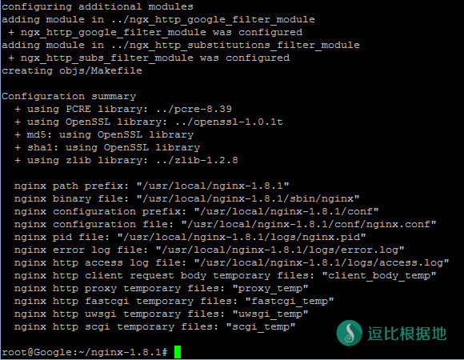
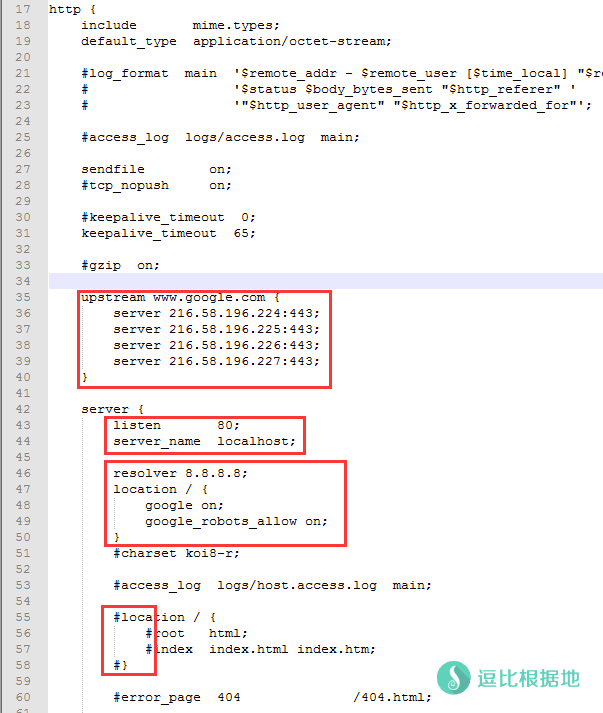
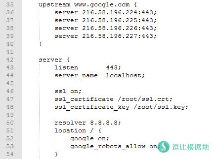

在国内不要脸的百度垄断的今天，我们需要更好的搜索引擎，可惜Google被墙，对于一些学术研究、查资料的轻度科学上网者来说，直接通过Google镜像进行学术研究会更方便，而且一直有不少人要求我写一个反向代理(镜像)Google的教程，那我就写吧！
其他的一些镜像Google的教程：
准备条件
一个 海外VPS；
一个域名（可选）；
一个域名的SSL证书（可选）。
为了方便访问和安全性（被墙）强烈建议加上SSL证书！
安装步骤
所用到的依赖库
pcre 正则
ngx_http_substitutions_filter_module 多重替换
安装
以 Ubuntu / Debian 系统为例 i386, x86_64 均适用
安装步骤
apt-get update && apt-get install build-essential git gcc g++ make -y && wget -N "http://nginx.org/download/nginx-1.8.1.tar.gz" && wget -N "ftp://ftp.csx.cam.ac.uk/pub/software/programming/pcre/pcre-8.39.tar.gz" && wget -N --no-check-certificate "https://www.openssl.org/source/openssl-1.0.1t.tar.gz" && wget -N "http://zlib.net/zlib-1.2.11.tar.gz" && git clone https://github.com/cuber/ngx_http_google_filter_module && git clone https://github.com/yaoweibin/ngx_http_substitutions_filter_module && tar xzvf nginx-1.8.1.tar.gz && tar xzvf pcre-8.39.tar.gz && tar xzvf openssl-1.0.1t.tar.gz && tar xzvf zlib-1.2.11.tar.gz && cd nginx-1.8.1 && mkdir /usr/local/nginx-1.8.1
前面这些下载依赖库和主要文件的就直接全部连在一起，一键执行好了。下面有拆分开分别解释的。
步骤解释
开始编译
注意这里编译的 ./configure 参数要下面几行连着全部复制，而不是一行一行复制！还有，编译完不要忘记执行最后两行的 make 命令。
# 设置编译选项 ./configure \ --prefix=/usr/local/nginx-1.8.1 \ --with-pcre=../pcre-8.39 \ --with-openssl=../openssl-1.0.1t \ --with-zlib=../zlib-1.2.11 \ --with-http_ssl_module \ --add-module=../ngx_http_google_filter_module \ --add-module=../ngx_http_substitutions_filter_module # 编译, 安装 # 如果扩展有报错, 请发 issue 到 # https://github.com/cuber/ngx_http_google_filter_module/issues make make install

结束安装
上面的步骤如果不出错就完成了安装，然后就先启动 Nginx，然后访问 http://VPS_IP/ ，看看是否有网页显示。
# 启动, 安装过程到此结束 /usr/local/nginx-1.8.1/sbin/nginx # 在配置修改后, 需要 reload nginx 来让配置生效, /usr/local/nginx-1.8.1/sbin/nginx -s reload
配置方法
基础配置
为了方便理解我在下面还写的有 示例解释 。
http配置方式
server {
server_name <你的域名>;
listen 80;
resolver 8.8.8.8;
location / {
google on;
}
}
https配置方式
server {
server_name <你的域名>;
listen 443;
ssl on;
ssl_certificate <你的证书>;
ssl_certificate_key <你的私钥>;
resolver 8.8.8.8;
location / {
google on;
}
}
进阶配置方法
基本搜索
需要配置 resolver 用于域名解析
server {
resolver 8.8.8.8;
location / {
google on;
}
}
谷歌学术
google_scholar 依赖于 google, 所以 google_scholar 无法独立使用.
由于谷歌学术近日升级, 强制使用 https 协议, 并且 ncr 已经支持, 所以不再需要指定谷歌学术的 tld
配置 nginx
location / {
google on;
google_scholar on;
}
默认语言偏好
默认的语言偏好可用 google_language 来设置, 如果没有设置, 默认使用 zh-CN (中文)
location / {
google on;
google_scholar on;
# 设置成德文
google_language "de";
}
支持的语言如下：
ar -> 阿拉伯 bg -> 保加利亚 ca -> 加泰罗尼亚 zh-CN -> 中国 (简体) zh-TW -> 中国 (繁体) hr -> 克罗地亚 cs -> 捷克 da -> 丹麦 nl -> 荷兰 en -> 英语 tl -> 菲律宾 fi -> 芬兰 fr -> 法国 de -> 德国 el -> 希腊 iw -> 希伯来 hi -> 印地文 hu -> 匈牙利 id -> 印度尼西亚 it -> 意大利 ja -> 日本 ko -> 朝鲜 lv -> 拉脱维亚 lt -> 立陶宛 no -> 挪威 fa -> 波斯 pl -> 波兰 pt-BR -> 葡萄牙 (巴西) pt-PT -> 葡萄牙 (葡萄牙) ro -> 罗马尼亚 ru -> 俄罗斯 sr -> 塞尔维亚 sk -> 斯洛伐克 sl -> 斯洛文尼亚 es -> 西班牙 sv -> 瑞典 th -> 泰国 tr -> 土耳其 uk -> 乌克兰 vi -> 越南
搜索引擎爬虫许可
任何搜索引擎爬虫都不被允许爬取 google 镜像
如下的默认 robots.txt 已经内置.
User-agent: * Disallow: /
如果想要使用 google 自己的 robots.txt 请将 google_robots_allow 设为 on
location / {
google on;
google_robots_allow on;
}
Upstreaming
upstream 减少一次域名解析的开销, 并且通过配置多个网段的 google ip 能够一定程度上减少被 google 机器人识别程序侦测到的几率 (弹验证码).
upstream 参数要放在 http{} 中，注意这个参数只有你加了SSL证书是https的时候才会有效，否则会报错！
寻找这个参数的谷歌IP很简单，在你的VPS上面 ping www.google.com ，获得的IP把最后一位数 加1或者减1 就行了。
upstream www.google.com {
server 173.194.38.1:443;
server 173.194.38.2:443;
server 173.194.38.3:443;
server 173.194.38.4:443;
}
示例
注意：upstream 参数只是示例，在http方式中不能使用这个参数，需要加上SSL证书使用https才可以用！谷歌学术参数同样也是！
在编译安装后，配置文件在 /usr/local/nginx-1.8.1/conf/nginx.conf ，我们打开该文件，先去 server{ } 中把下图 55-58 行的代码注释掉（前面加上"#"号）
然后按照上面各参数的说明和我下图的示例进行配置。
其中 server_name 默认是 localhost ，也就是VPS的公网IP，如果你要用域名，就改成你的域名。
因为是示例，我把谷歌学术 google_robots_allow on; 参数也加上了，而且谷歌学术需要HTTPS方式才行，如果不需要你可以去掉。

下图是加了SSL证书的HTTPS示例，证书和密匙假设是在 /root 目录
注意：只有在HTTPS中才能使用 upstream 参数和谷歌学术 google_robots_allow on;

其实，还是有其他更简单的方法，比如AMH的面板就有一个 反向代理 的模块，只要输入网址就能反向代理了。
参考资料：https://github.com/rptec/ngx_http_google_filter_module
转载请超链接注明：逗比根据地 » 一种非常方便 反向代理(镜像)Google 的 Nginx Google 扩展
责任声明：本站一切资源仅用作交流学习，请勿用作商业或违法行为！如造成任何后果，本站概不负责！


location / { google on; google_scholar on; google_language en; } location /patents { rewrite /patents(.*) /$1 break; proxy_redirect off; proxy_pass https://patents.google.com/; proxy_set_header Host "patents.google.com"; proxy_set_header Accept-Encoding ""; proxy_set_header X-Real-IP $remote_addr; proxy_set_header X-Forwarded-For $proxy_add_x_forwarded_for; proxy_set_header X-Forwarded-Proto https; proxy_set_header User-Agent $http_user_agent; proxy_set_header Accept-Language "en-US"; }